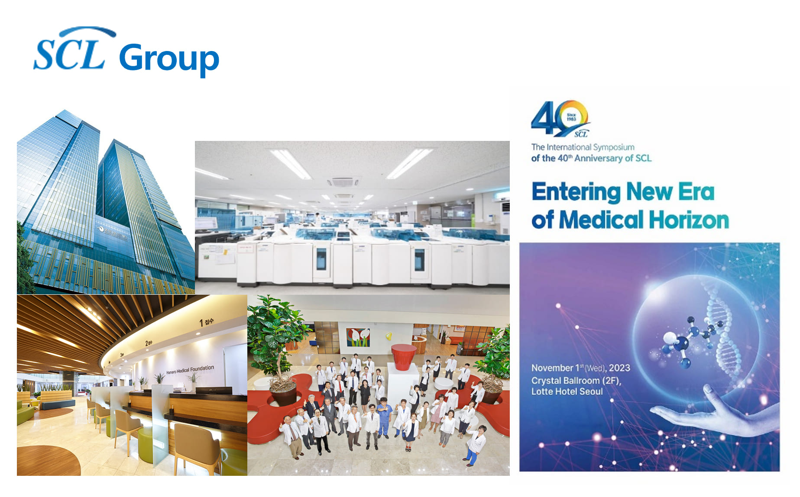

-
About us
-
Leadership
-
Strategic Advisor
-
Jobs
Our mission is to prevent cardiac disease
We believe that the application of AIoMT technology in healthcare is one of the most transformational shifts of our time. Our mission is to make that happen, faster, in the fight against the leading killer globally: cardiac disease.
The start of things
We started in the Digital Diagnosis R&D Center in SCL, a machine learning scientist conducting basic and translational research in the application of machine learning in cardiology. We worked together, night and day, to try to answer the question: can we prevent heart disease?
We saw a need for a different kind of technology, a platform that brings together clinical, engineering and data expertise to power new waves of innovation. That’s why we founded HolmesAI.
Our Story
Reimagining a world with predictive health at our fingertips HolmesAI is a leader in AIoMT technology for remote patient monitoring in both hospital and remote patient populations. HolmesAI leverages extensive expertise in biomedical engineering, data analytics, chip design, and mobile and cloud software to create technology that supports decision-making paradigms that achieve better health and economic outcomes. HolmesAI’s products are designed for use in a broad range of inpatient and outpatient settings, such as hospital monitoring, post-discharge care, cardiac monitoring.
HolmesAI has an experienced commercial and technical leadership team with a proven track record in the health care market. Additionally, our large portfolio of intellectual properties, including more-than 20 patents, gives HolmesAI a competitive advantage and scalability.
비디오

The SCL Group(Best Healthcare Group in Korea) was launched in 1983 as a medical institution specializing in clinical trials. Since the foundation, SCL Group has consistently pursued the three core values of quality, service and R&D. As the most professional committed research institution in Korea, SCL Group will continuously do our best by putting our customers first and become a patient-oriented international clinical research institution by studying state-of-the-art medicine based on evidence.
Corporate operations in 14 countries around the world

People with experienced voices come together to create a brighter world.
-
 Chairman & Founder
Chairman & FounderKyoung Ryul Lee
KR Lee is the chairman of SCL Group. Prior to SCL Group , KR Lee served as a professor of diagnostic medicine at Severance Hospital. KR Lee has been making inroads into overseas medical care such as Mongolia and Indonesia. KR Lee has proven experience driving global medical growth. KR Lee received a Ph.D. in medicine from the University of Yonsei.
-
 CEO
CEODong Seok Lim
DS Lim has over 28+ years of experience in ICT, digital healthcare, manufacturing, and commercialization. Prior to joining HolmesAI, DS Lim was the CEO of HEALTHCONNECT, leading the operations for the development of digital healthcare solutions. It more than doubled the company's corporate value and transformed it into a global company. DS Lim has a Ph.D. candidate from Korea University in convergence system engineering.
-
 CTO of AI
CTO of AISeung Park
S Park is an expert with 15 years of specialization in medical artificial intelligence. He currently holds positions as a professor at the College of Medicine, Chungbuk National University, Director of the AI Center at Chungbuk National University Hospital, and Head of the Department of Biomedical Engineering. Over the past five years, he has published more than 20 papers in SCI journals related to medical AI.
-
CTO of IoMT
Seok Tae Seo
ST Seo has over 20+ years of experience in medical device development, manufacturing. Prior to joining HolmesAI, ST Seo was a principal researcher of Daegu-Gyeongbuk Medical Innovation Foundation, leading the operations for the development of a medical device. ST Seo has a Ph.D. from Yeungnam University in electrical engineering.
-
CMO
Se Yeon Baek
SY Baek is an internationally recognized specializing in diagnostic medicine. She brings extensive clinical and medical expertise to HolmesAI , in conjunction with a keen understanding of the evolving healthcare landscape. She completed her undergraduate and medical school training at the University of Ewha Womans and completed her residency in diagnostic medicine at Aju University.
-
 COO
COOJong Seon Lee
JS Lee is the COO. He has 30+ years of combined experience in the medical system and hospital industries. Before joining HolmesAI, JS Lee was the technical for Fujitsu healthcare division. Experience developing Hospital Information Systems for many university hospitals. JS Lee has a bachelor's degree from Chosun University in computer engineering.
Strategic Advisory Board
The Strategic Advisory Board provides advice for strategic decision-making to the HolmesAI Flagship, with long-term impact across the whole initiative. The Strategic Advisory Board steers the preparation of the HolmesAI Flagship’s Strategic Agendas. The Strategic Advisory Board also designed Key Performance Indicators to monitor the Flagship’s progress towards its main goals, both in research and innovation and in non-technical areas, such as education and outreach.
-
 Head Advisor
Head AdvisorYeon su Kim
Dr. Kim, MD has 35 years of leadership experience at Seoul National University Hospital and served as President of the Seoul National University Hospital from 2019 to 2023. He also served as president of the board of the University Hospital Association. He completed his undergraduate and medical school training at the University of Seoul University completed.
-
 Business Advisor
Business AdvisorJun hyukJo
Dr. Jo, brings more than 30 years of experience in the Ministry of Foreign Affairs in Korea. Dr. Jo, received a Bachelor of Arts in Economics from the University of Georgia completed. He is passionate about advising startups developing innovative medical devices and solutions for cardiovascular diseases.
-
 Medicine Advisor
Medicine AdvisorHan Gyeom Kim
HG Kim, a pathologist, is the Heart Failure Medical Director for the HANARO Health System. He maintains an active practice while also conducting numerous research projects supported by grants from HANARO, the Korea Heart Association and the National Institutes of Health.
-
 Biomedical Engineering Advisor
Biomedical Engineering AdvisorSeong wan Kim
SH Kim has enjoyed a career spanning over twenty-five years in Networks Design and Architecture, Operations & Business Support Systems and Mobile Application Development fields. As the senior VP of NASA and officer, he led the prestigious Research organization involved in Network, Software and Speech technologies research.
Join One of the World’s Fastest Growing AIoMT Technology Companies
HolmesAI is a leader in innovative healthcare AI solutions, committed to combating one of the world’s most significant health challenges: heart disease. Within our dynamic environment, you'll find teams and individuals who continually push boundaries, offer unwavering support, and ignite inspiration, propelling you toward extraordinary achievements.
We are a team of game-changers committed to accelerating healthcare innovation. We believe that our team is at the heart of everything we do, helping us realize our shared mission of connecting and curating the world’s healthcare information to enable truly holistic care.
See what it’s like to work, live, and play in a collaborative culture that welcomes your ideas and entrepreneurial spark—a unique place where your career is nurtured, and you can see the difference you’re making in healthcare and people’s lives.
* Apply : jobs@holmesai.co.kr